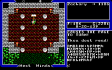
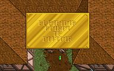
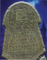
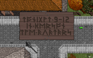
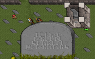
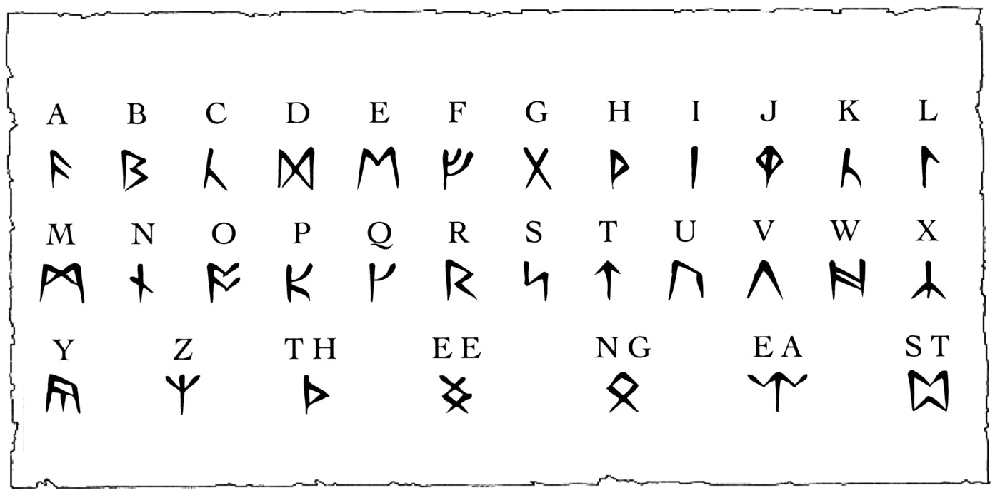

Ultima est une série de jeux de rôle sur ordinateur développée par la société Origin
Systems (aujourd’hui filiale d’ Electronic Arts ) entre 1981 et 1999.
Créée par
Richard Garriott, alias Lord British, la série est souvent considérée par ses amateurs comme un
modèle du genre.a
La série raconte l’histoire d’un héros provenant de la Terre et appelé à sauver à de
multiples reprises un monde connu tout d’abord sous le nom de Sosaria puis de Britannia.
Les neuf épisodes de cette série se divisent en trois grands âges.
| Numéro | Titre | Année | |
|---|---|---|---|
| Âge des ténèbres | Ultima I | The First Age of Darkness | 1981 |
| Ultima II | The Revenge of the Enchantress | 1982 | |
| Ultima III | Exodus | 1983 | |
| Âge de la lumière | Ultima IV | Quest of the Avatar | 1985 |
| Ultima V | Warriors of Destiny | 1988 | |
| Ultima VI | The False Prophet | 1990 | |
| Saga du Gardien | Ultima VII | The Black Gate | 1992 |
| The Serpent Isle | 1993 | ||
| Ultima VIII | Pagan | 1994 | |
| Ultima IV | Ascension | 1999 |
Le héros (appelé « l’Étranger ») est appelé pour la première fois dans le monde de Sosaria
afin de vaincre le magicien maléfique dénommé Mondain (Ultima I),
qui cherche à réduire
les habitants en esclavage. Après avoir vaincu Mondain, l’Étranger doit combattre l’amante
et apprentie secrète de Mondain, l’enchanteresse Minax (Ultima II),
qui se venge en
s’attaquant au monde d’origine de l’Étranger, la Terre. L’Étranger est ensuite convoqué à
nouveau en Sosaria pour combattre le rejeton de Mondain et de Minax,
une entité appelée
Exodus (Ultima III), une sorte d’ordinateur démoniaque doté d’une intelligence artificielle.
Ultima IV se démarque du format habituel opposant un héros et un ennemi maléfique : en
effet, l’Étranger est appelé sur Britannia par Lord British
pour y entreprendre une quête
spirituelle grâce à laquelle il deviendra un exemple pour les habitants du monde. Pour y
parvenir, il devra suivre un système complexe
basé sur 8 vertus elles-mêmes dérivées de 3
principes fondamentaux (amour, vérité et courage). À l’issue de sa quête, l’Étranger
devient l’Avatar, l’incarnation des vertus.

Dans Ultima V, l’Avatar revient sur Britannia pour sauver Lord British, qui a disparu lors
d’une expédition souterraine, et pour libérer le royaume de la présence de trois Seigneurs
d’ombre
répandant la haine, le mensonge et la couardise (les antithèses de l’amour, de la
vérité et du courage).

Ultima VII se divise en deux parties : le jeu de base (The Black Gate) et un second volet
(The Serpent Isle), chacun augmenté d’une extension (Forge of Virtue et The Silver Seed).
L’Avatar est rappelé sur Britannia pour élucider le meurtre d’un forgeron et de son
apprenti gargouille. De fil en aiguille, il dévoilera un complot organisé par une entité
maléfique appelée le Gardien :
à travers une organisation apparemment bienveillante (la
Fraternité), celui-ci tente d’ouvrir un portail lui permettant d’accéder physiquement au
monde de Britannia.
Le lieutenant du Gardien, le maître de la Fraternité, parvient à
s’échapper au dernier moment et à fuir vers un autre monde, où l’Avatar le pourchassera.
À la fin d’Ultima VII, le Gardien exile l’Avatar dans un monde appelé Pagan, où les vertus
de Britannia ne sont pas connues.
Dans Ultima VIII, l’Avatar devra se hisser à la hauteur
des titans élémentaires qui dirigent le monde de Pagan afin de pouvoir quitter celui-ci.
Finalement, dans le dernier épisode de la série,
Ultima IX, l’Avatar retrouve un royaume
de Britannia corrompu par la présence du Gardien. Il devra rétablir les vertus puis éliminer
une fois pour toute le Gardien.
Outre les 9 épisodes de la série principale, on peut citer les trois versions suivantes, qui se basent sur le même cadre de campagne.



La série Ultima a introduit au fil des années de nombreuses nouveautés qui font
aujourd’hui partie de la plupart des jeux de rôle sur ordinateur : système d’alignement,
interactions avec le monde, …
Parmi les particularités qui distinguent le monde d’Ultima
des autres cadres de jeu, on peut noter le système des vertus et l’alphabet runique.
IG1 – Séminaires technologiques (HTML/CSS) 8
Dans sa quête spirituelle (Ultima IV), l’Avatar doit développer huit vertus. Dans le système
philosophique présenté par le jeu, ces huit vertus sont créées en combinant trois principes
de base :
amour, vérité et courage.
Ces huit vertus sont les suivantes : Humilité, Compassion, Valeur, Honnêteté, Justice,
Sacrifice, Honneur et Spiritualité. Voici comment elles découlent des trois principes.
Dans le monde d’Ultima, les habitants utilisent un alphabet runique inspiré des runes nordiques. La plupart des pancartes et autres indications que le joueur rencontre, ainsi que la majorité des écrits magiques, utilisent ces runes.
